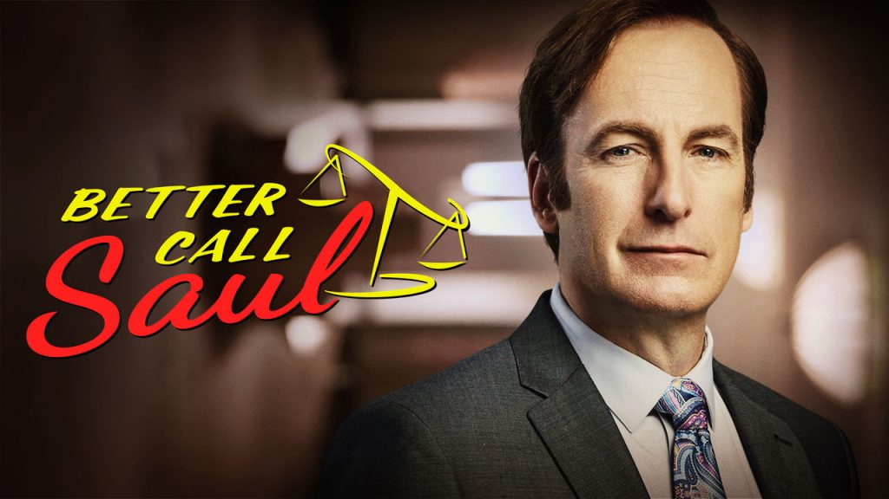

TV Shows
TV Show 1

Arguably the biggest comedy show of the 90's, this show features comedian Jerry Seinfeld and his 3 friends as they go through life in New York City.
TV Show 2
Better Call Saul is an American legal crime drama television series created by Vince Gilligan and Peter Gould. Part of the Breaking Bad franchise, it is a spin-off from Gilligan's previous series, Breaking Bad, to which it serves primarily as a prequel.
YOU

You is an American psychological thriller television series based on the books by Caroline Kepnes, developed by Greg Berlanti and Sera Gamble, and produced by Berlanti Productions, Alloy Entertainment, and A+E Studios in association with Warner Horizon Television, now Warner Bros. Television.